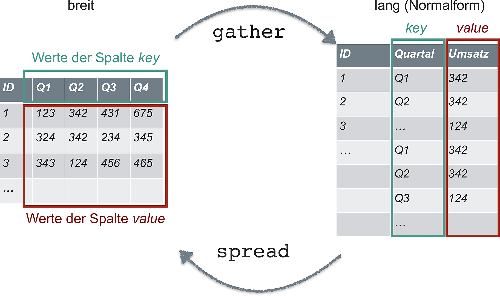

library(tidyverse)
library(here)1 R, zweiter Blick
Benötigte R-Pakete für dieses Kapitel:
1.1 Lernsteuerung
1.1.1 Lernziele
- Sie können Funktionen, in R schreiben.
- Sie können Datensätze vom Lang- und Breit-Format wechseln.
- Sie können Wiederholungsstrukturen wie Mapping-Funktionen anwenden.
- Sie können eine dplyr-Funktion auf mehrere Spalten gleichzeitig anwenden.
- Sie können Textdaten analysieren.
- Sie können mit Pfaden (relativ und absolut) umgehen.
1.1.2 Vorbereitung
Machen Sie sich mit den Grundlagen von R vertraut. Die Grundlagen von R können z.B. im Online-Buch ‘Statistik1’, Kapitel ‘Daten einlesen’ wiederholt werden.
1.2 Objekttypen in R
Näheres zu Objekttypen findet sich in Sauer (2019), Kap. 5.2.
1.2.1 Überblick
In R ist praktisch alles ein Objekt.
Definition 1 (Objekt (Informatik)) Ein Objekt meint ein im Computerspeicher repräsentiertes Ding, etwa eine Tabelle.\(\square\)
Beispiel 1 (Beispiele für Objekte) Vektoren und Dataframes (Tibbles) sind die vielleicht gängigsten Objektarten in R (vgl. Abbildung 1), aus Sauer (2019)).\(\square\)

Es gibt in R keine (Objekte für) Skalare (einzelne Zahlen). Stattdessen nutzt R Vektoren der Länge 1.
Ein nützliches Schema stammt aus Wickham, Çetinkaya-Rundel, und Grolemund (2023), s. Abbildung 2).

1.2.2 Taxonomie
Unter homogenen Objektiven verstehen wir Datenstrukturen, die nur eine Art von Daten (wie Text oder Ganze Zahlen) fassen. Sonstige Objekte nennen wir heterogen.
- Homogene Objekte
- Vektoren
- Matrizen
- Heterogen
- Liste
- Dataframes (Tibbles)
1.2.2.1 Vektoren
Vektoren sind insofern zentral in R, als dass die übrigen Datenstrukturen auf ihnen aufbauen, vgl. Abbildung 3 aus Sauer (2019).
Reine (atomare) Vektoren in R sind eine geordnete Liste von Daten eines Typs.

ein_vektor <- c(1, 2, 3)
noch_ein_vektor <- c("A", "B", "C")
logischer_vektor <- c(TRUE, FALSE, TRUE)Mit str() kann man sich die Struktur eines Objektsausgeben lassen:
str(ein_vektor)
## num [1:3] 1 2 3
str(noch_ein_vektor)
## chr [1:3] "A" "B" "C"
str(logischer_vektor)
## logi [1:3] TRUE FALSE TRUEVektoren können von folgenden Typen sein:
- Kommazahlen (
double) genannt - Ganzzahlig (
integer, auch mitLfür Long abgekürzt) - Text (´character`, String)
- logische Ausdrücke (
logicaloderlgl) mitTRUEoderFALSE
Kommazahlen und Ganze Zahlen zusammen bilden den Typ numeric (numerisch) in R.
Den Typ eines Vektors kann man mit typeof() ausgeben lassen:
typeof(ein_vektor)
## [1] "double"1.2.2.2 Faktoren
sex <- factor(c("Mann", "Frau", "Frau"))Interessant:
str(sex)
## Factor w/ 2 levels "Frau","Mann": 2 1 1Vertiefende Informationen findet sich in Wickham, Çetinkaya-Rundel, und Grolemund (2023).
1.2.2.3 Listen
eine_liste <- list(titel = "Einführung",
woche = 1,
datum = c("2022-03-14", "2202-03-21"),
lernziele = c("dies", "jenes", "und noch mehr"),
lehre = c(TRUE, TRUE, TRUE)
)
str(eine_liste)
## List of 5
## $ titel : chr "Einführung"
## $ woche : num 1
## $ datum : chr [1:2] "2022-03-14" "2202-03-21"
## $ lernziele: chr [1:3] "dies" "jenes" "und noch mehr"
## $ lehre : logi [1:3] TRUE TRUE TRUE1.2.2.4 Tibbles
Für tibble() brauchen wir tidyverse:
library(tidyverse)
studentis <-
tibble(
name = c("Anna", "Berta"),
motivation = c(10, 20),
noten = c(1.3, 1.7)
)
str(studentis)
## tibble [2 × 3] (S3: tbl_df/tbl/data.frame)
## $ name : chr [1:2] "Anna" "Berta"
## $ motivation: num [1:2] 10 20
## $ noten : num [1:2] 1.3 1.71.2.3 Indizieren
Einen Teil eines Objekts auszulesen, bezeichnen wir als Indizieren.
1.2.3.1 Reine Vektoren
Zur Erinnerung:
str(ein_vektor)
## num [1:3] 1 2 3ein_vektor[1]
## [1] 1
ein_vektor[c(1,2)]
## [1] 1 2Aber nicht so:
ein_vektor[1,2]
## Error in ein_vektor[1, 2]: falsche Anzahl von DimensionenMan darf Vektoren auch wie Listen ansprechen, also eine doppelte Eckklammer zum Indizieren verwenden
ein_vektor[[2]]
## [1] 2Der Grund ist, dass Listen auch Vektoren sind, nur eben ein besonderer Fall eines Vektors:
is.vector(eine_liste)
## [1] TRUEWas passiert, wenn man bei einem Vektor der Länge 3 das 4. Element indiziert?
ein_vektor[4]
## [1] NAEin schnödes NA ist die Antwort. Das ist interessant: Wir bekommen keine Fehlermeldung, sondern den Hinweis, das angesprochene Element sei leer bzw. nicht verfügbar.
In Sauer (2019), Kap. 5.3.1 findet man weitere Indizierungsmöglichkeiten für reine Vektoren.
1.2.3.2 Listen
eine_liste %>% str()
## List of 5
## $ titel : chr "Einführung"
## $ woche : num 1
## $ datum : chr [1:2] "2022-03-14" "2202-03-21"
## $ lernziele: chr [1:3] "dies" "jenes" "und noch mehr"
## $ lehre : logi [1:3] TRUE TRUE TRUEListen können wie Vektoren, also mit [ ausgelesen werden. Dann wird eine Liste zurückgegeben.
eine_liste[1]
## $titel
## [1] "Einführung"
eine_liste[2]
## $woche
## [1] 1Das hat den technischen Hintergrund, dass Listen als eine bestimmte Art von Vektoren implementiert sind.
Mann kann auch die “doppelte Eckklammer”, [[ zum Auslesen verwenden; dann wird anstelle einer Liste die einfachere Struktur eines Vektors zurückgegeben:
eine_liste[[1]]
## [1] "Einführung"Man könnte sagen, die “äußere Schicht” des Objekts, die Liste, wird abgeschält, und man bekommnt die “innere” Schicht, den Vektor.
Mann die Elemente der Liste entweder mit ihrer Positionsnummer (1, 2, …) oder, sofern vorhanden, ihren Namen ansprechen:
eine_liste[["titel"]]
## [1] "Einführung"Dann gibt es noch den Dollar-Operator, mit dem Mann benannte Elemente von Listen ansprechen kann:
eine_liste$titel
## [1] "Einführung"Man kann auch tiefer in eine Liste hinein indizieren. Sagen wir, uns interessiert das 4. Element der Liste eine_liste - und davon das erste Element.
Das geht dann so:
eine_liste[[4]][[1]]
## [1] "dies"Eine einfachere Art des Indizierens von Listen bietet die Funktion pluck(), aus dem Paket purrr, das Hilfen für den Umgang mit Listen bietet.
pluck(eine_liste, 4)
## [1] "dies" "jenes" "und noch mehr"Und jetzt aus dem 4. Element das 1. Element:
pluck(eine_liste, 4, 1)
## [1] "dies"Probieren Sie mal, aus einer Liste der Länge 5 das 6. Element auszulesen:
eine_liste %>% length()
## [1] 5eine_liste[[6]]
## Error in eine_liste[[6]]: Indizierung außerhalb der GrenzenUnser Versuch wird mit einer Fehlermeldung quittiert.
Sprechen wir die Liste wie einen (atomaren) Vektor an, bekommen wir hingegen ein NA bzw. ein NULL:
eine_liste[6]
## $<NA>
## NULL1.2.3.3 Tibbles
Tibbles lassen sich sowohl wie ein Vektor als auch wie eine Liste indizieren.
studentis[1]Die Indizierung eines Tibbles mit der einfachen Eckklammer liefert einen Tibble zurück.
studentis["name"]Mit doppelter Eckklammer bekommt man, analog zur Liste, einen Vektor zurück:
studentis[["name"]]
## [1] "Anna" "Berta"Beim Dollar-Operator kommt auch eine Liste zurück:
studentis$name
## [1] "Anna" "Berta"1.2.4 Weiterführende Hinweise
- Tutorial zum Themen Indizieren von Listen von Jenny BC.
1.2.5 Indizieren mit dem Tidyverse
Natürlich kann man auch die Tidyverse-Verben zum Indizieren verwenden. Das bietet sich an, wenn zwei Bedingungen erfüllt sind:
- Wenn man einen Tibble als Input und als Output hat
- Wenn man nicht programmieren möchte
1.3 Pfade
Erfahrungsgemäß gibt es bei einigen Lernenden Probleme mit dem Importieren von Daten. Genauer gesagt machen die Pfade Probleme.
Tipp
Man arbeite in einem RStudio-Projekt. Dort lege man z.B. auch die Daten ab. Das macht das Arbeiten mit den Pfaden einfacher.
Zentral für das Arbeiten mit Pfaden ist der Unterschied von relativen zu absoluten Pfaden.
Übungsaufgabe 1 Lesen Sich sich zum Unterschied von relativen zu absoluten Pfaden ein. Hier oder hier finden Sie einen Ansatzpunkt.
Beispiel 2
"C:\Users\sebastian.sauer\Documents\Github\hans-hackathon\input\mtcars.csv"ist ein absoluter Pfad."input\mtcars.csv"ist ein relativer Pfad.
Übungsaufgabe 2 (Daten importieren mit relativem Pfad) Laden Sie den Datensatz mtcars herunter und kopieren Sie ihn in ein Unterverzeichnis Ihres Projektordners. Das Unterverzeichnis soll hießen data. Dann importieren Sie den Datensatz, wobei Sie den Unterordner als relativen Pfad angeben:
mtcars <- read.csv("input/mtcars.csv")Übungsaufgabe 3 (Daten importieren mit absolutem Pfad) Importieren Sie den Datensatz mtcars mit absolutem Pfad. Was sind die Vor- und die Nachteile dieses Vorgehens?
path_abs <- "C:\Users\sebastian.sauer\Documents\Github\hans-hackathon\input\mtcars.csv" # Pfad auf MEINER Maschine
mtcars <- read.csv(path_abs)Ein Nachteil von absoluten Pfaden ist, dass sie nicht portabel sind: Mein Pfad wird auf Ihrem Computer nicht funktionieren.
Eine Hilfe bietet da das Paket here, das das aktuelle RStudio-Arbeitsverzeichnis (working directory) zurückgibt:
here()
## [1] "/home/sebastian-sauer/Dokumente/hans-hackathon2025"Entsprechend können wir uns damit portablere absolute Pfade basteln:
path_abs_portable <- paste0(here(),"/", "input/mtcars.csv")
path_abs_portable
## [1] "/home/sebastian-sauer/Dokumente/hans-hackathon2025/input/mtcars.csv"
mtcars <- read.csv(path_abs_portable)
Backslashes haben eine besondere Bedeutung in R
Wenn Sie Windows nutzen, ersetzen Sie am besten die Backslashes durch normale (“Forward-”)Slashes, das können Sie mit Search-Replace in RStudio erledigen.
path_abs <- "C:/Users/sebastian.sauer/Documents/Github/hans-hackathon/input/mtcars.csv"
mtcars <- read.csv(path_abs)
## Error in file(file, "rt"): kann Verbindung nicht öffnen1.4 Datensätze von lang nach breit umformatieren
Manchmal findet man Datensätze im sog. langen Format vor, manchmal im breiten.
In der Regel müssen die Daten “tidy” sein, was meist dem langen Format entspricht, vgl. Abbildung 4 aus Sauer (2019).

In einer neueren Version des Tidyverse werden diese beiden Befehle umbenannt bzw. erweitert, s. Abbildung 5.
gather()->pivot_longer()spread()->pivot_wider()

Weitere Informationen findet sich in Wickham, Çetinkaya-Rundel, und Grolemund (2023), in diesem Abschnitt, 12.3.
1.5 Funktionen
Eine Funktion kann man sich als analog zu einer Variable vorstellen. Es ist ein Objekt, das nicht Daten, sondern Syntax beinhaltet, vgl. Abbildung 6 aus Sauer (2019).

mittelwert <- function(x){
summe <- sum(x, na.rm = TRUE)
mw <- summe/length(x)
return(mw)
}mittelwert(c(1, 2, 3))
## [1] 2Es gibt viele Bücher und Webseiten, was eine Funktion (in R) ist, wozu sie gut ist und wie man sie schreibt und nutzt. Weitere Informationen finden sich in Kapitel 19 in Wickham, Çetinkaya-Rundel, und Grolemund (2023). Alternativ findet sich ein Abschnitt dazu (28.1) in Sauer (2019).
Übungsaufgabe 4 (Schreiben Sie eine einfache Funktion) Schreiben Sie eine einfache R-Funktion und erklären Sie sie.
1.6 Textverarbeitung
Stellen Sie sich vor, Sie haben eine Menge Emails (ein paar Zehntausend), in denen Telefonnummern mit Durchwahlen zur Firma, in der Sie arbeiten vorkommen. Sie möchten alle Emails herausfischen, die eine solche Telefonnummer beinhaltet. Da es viele Emails sind, möchten Sie die Mails nicht einzeln anpacken. Sie bräuchten einen kleinen Roboter, dem Sie sinngemäß sagen könnten:
🧑🎓 Hey, ich hätte gerne alle Mails mit den Telefonnummern in unseren Betrieb. Aber keine andere Mail bitte sehr.
🤖 Jippiejeh, endlich geht’s wieder los!
Textvariablen erkennt man daran, dass ihr Inhalt mit doppelten oder einfachen Anführungszeichen ausgezeichnet ist:
eine_antwort <- "Die Antwort lautet 42"
andere_antwort <- "Die Antwort lautet 73"Wickham bieten eine gute Einführung in die Analyse von Textvariablen bzw. Textdaten.
1.7 Wiederholungen programmieren
Häufig möchte man eine Operation mehrfach ausführen. Ein Beispiel wäre die Anzahl der fehlenden Werte pro Spalte auslesen. Natürlich kann man die Abfrage einfach häufig tippen, nervt aber irgendwann. Daher braucht’s Strukturen, die Wiederholungen beschreiben.
Dafür gibt es verschiedene Ansätze.
1.7.1 across()
Handelt es sich um Spalten von Tibbles, dann bietet sich die Funktion across(.col, .fns) an. across wendet eine oder mehrere Funktionen (mit .fns bezeichnet) auf die Spalten .col an.
Das erklärt sich am besten mit einem Beispiel:
Natürlich hätte man in diesem Fall auch anders vorgehen können:
mtcars %>%
summarise(across(.cols = everything(),
.fns = mean))Möchte man der Funktion .fns Parameter übergeben, so nutzt man diese Syntax (“Purrr-Lambda”):
mtcars %>%
summarise(across(.cols = everything(),
.fns = ~ mean(., na.rm = TRUE)))Hier findet sich ein guter Überblick zu across().
1.7.2 map()
map() ist eine Funktion aus dem R-Paket purrr und Teil des Tidyverse.
map(x, f) wenden die Funktion f auf jedes Element von x an. Ist x ein Tibble, so wird f demnach auf jede Spalte von x angewendet (“zugeordnet”, daher map), vgl. Abbildung 7 aus Sauer (2019).

Hier ein Beispiel-Code:
data(mtcars)
mtcars <- mtcars %>% select(1:3) # nur die ersten 3 Spalten
map(mtcars, mean)
## $mpg
## [1] 20.09062
##
## $cyl
## [1] 6.1875
##
## $disp
## [1] 230.7219Möchte man der gemappten Funktion Parameter übergeben, nutzt man wieder die “Kringel-Schreibweise”:
map(mtcars, ~ mean(., na.rm = TRUE))
## $mpg
## [1] 20.09062
##
## $cyl
## [1] 6.1875
##
## $disp
## [1] 230.72191.7.3 Weiterführende Hinweise
Weiteres zu map() findet sich z.B. in Wickham, Çetinkaya-Rundel, und Grolemund (2023), Kapitel 21.5 oder in Sauer (2019), Kap. 28.2.
Hier ist ein Tutorial zu map() von Jenny BC.
1.8 R war schwierig
Manche behaupten, R sei ein Inferno.
Zum Glück gibt es auch aufmunternde Stimmen:
praise::praise()
## [1] "You are groovy!"Programmieren war schwierig(er), als es noch keine KI-Bots gab. Heutzutage ist es dank dieser Bots deutlich einfacher. Nutzen Sie also diese Erleichterung ausgiebig.
Hat jemand sonst noch einen guten Rat für uns? Vielleicht ist der häufigste Rat, dass man die Dokumentation lesen solle.
1.9 Fallstudien
Hier finden Sie einige Fallstudien, die Ihnen die Inhalte dieses Kapitels näher bringen.
Literatur
Sauer, Sebastian. 2019. Moderne Datenanalyse mit R: Daten einlesen, aufbereiten, visualisieren und modellieren. 1. Auflage 2019. FOM-Edition. Wiesbaden: Springer. https://www.springer.com/de/book/9783658215866.
Wickham, Hadley, Mine Çetinkaya-Rundel, und Garrett Grolemund. 2023. R for Data Science: Import, Tidy, Transform, Visualize, and Model Data. Second edition. Beijing ; Sebastopol, CA: O’Reilly.
Wiederverwendung
MIT
Zitat
Mit BibTeX zitieren:
@online{untitled,
author = {},
url = {https://sebastiansauer.github.io/hans-hackathon2025/einstieg.html},
langid = {de-DE}
}
Bitte zitieren Sie diese Arbeit als: